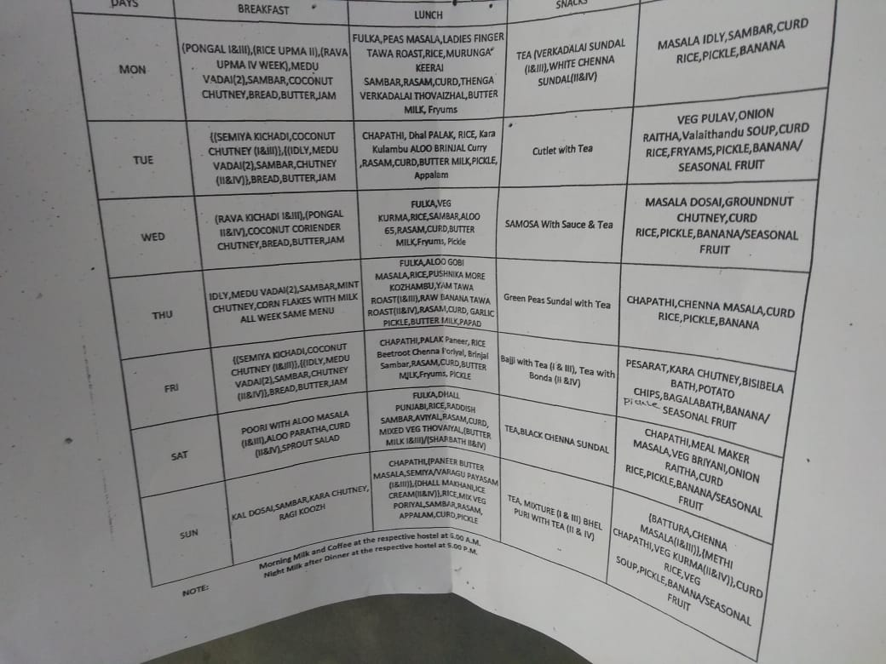

<ion-header>
  <ion-toolbar>
    <ion-buttons slot="start">
      <ion-back-button defaultHref="main"></ion-back-button>
    </ion-buttons>
    <ion-title>
      General Menu
    </ion-title>
  </ion-toolbar>
</ion-header>

<ion-content>
  <ion-card>
    <ion-card-header class="date">
      Menu as updated on {{date}}
    </ion-card-header>
    <ion-card-content>
      <ion-item class="itemmenu" lines="none" (click)="showImage()">
          <ion-thumbnail slot="start">
            
          </ion-thumbnail>
          <ion-label>Click to view image</ion-label>
      </ion-item>
    </ion-card-content>
  </ion-card>
</ion-content>